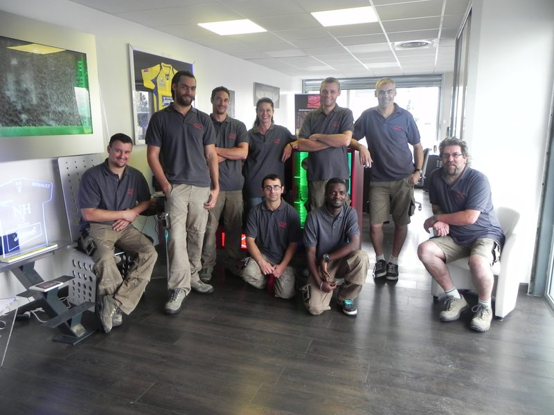
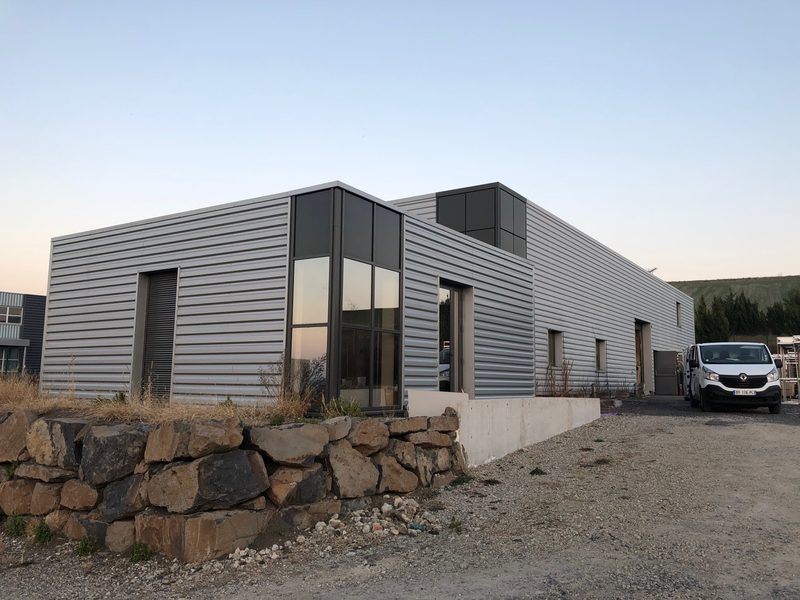
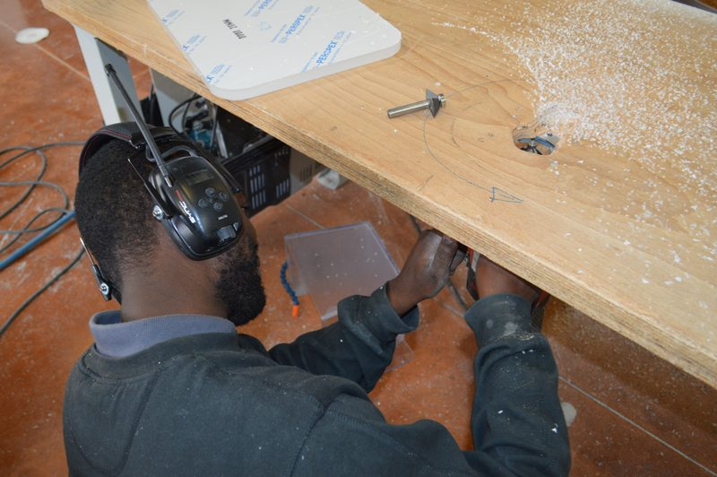
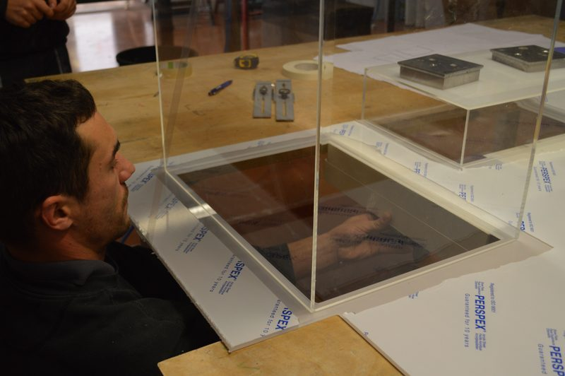
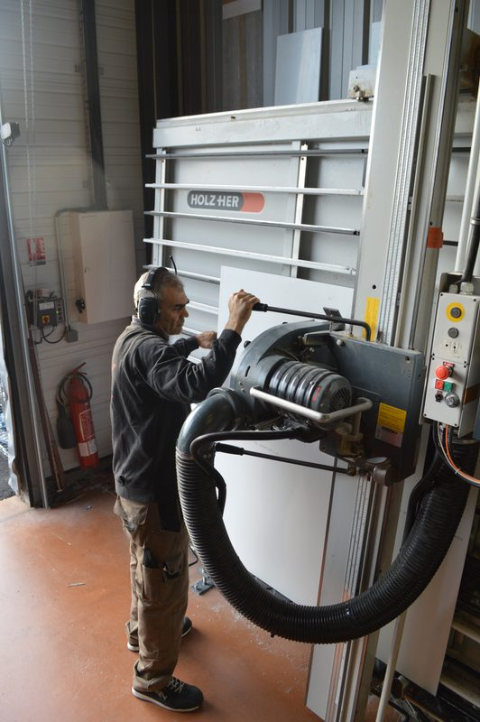
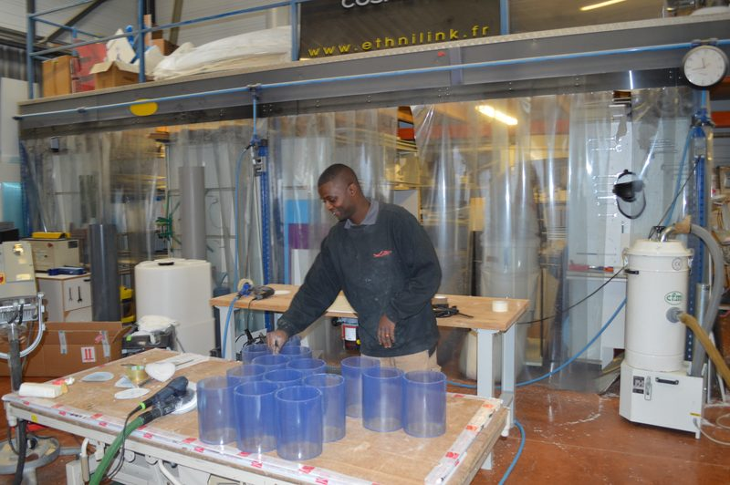

Accueil / L'entreprise
L'atelier
Atelier CastelPontin du Plastique, installé à Pont-du-Château depuis 2006.
Un travail d'atelier
ACPP fabrique des pièces en plastique comme un ébéniste travaille le bois : par usinage, découpe, assemblage et finition, pièce par pièce. L'entreprise ne fait ni injection ni thermoformage ; elle intervient sur des besoins précis, à l'unité ou en petite série.
Ses clients viennent principalement du secteur médical, mais aussi de l'industrie, des musées et du commerce.

L'atelier en images












Nous trouver
Nos bureaux5 rue de Chambussière, 63430 Pont-du-Château
Itinéraire
Itinéraire
Notre atelier10 rue de Chambussière, 63430 Pont-du-Château
Itinéraire
Itinéraire